Examples#
If you are thirsty for some examples, please visit the teahouse. A small selection of our items:
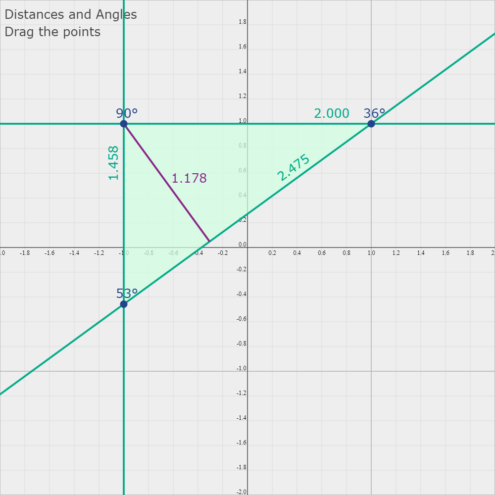 Land measurement 101 |
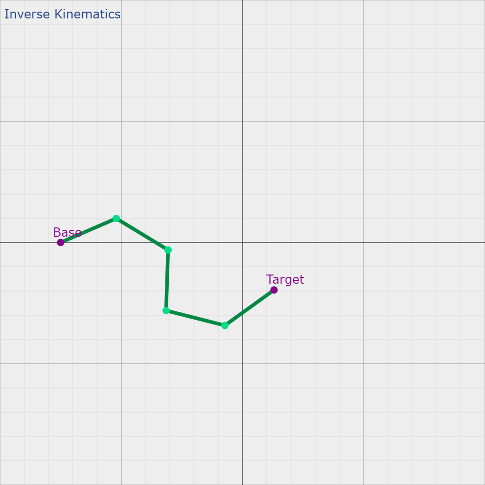 Dimension agnostic IK |
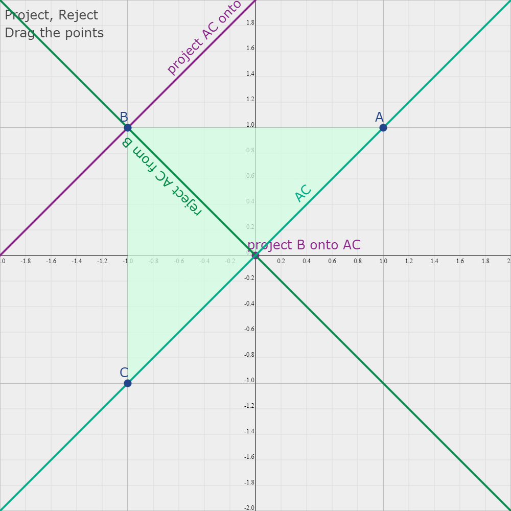 2D projection and intersection |
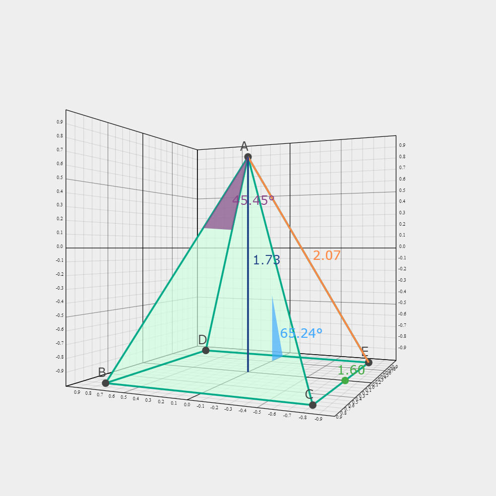 Land measurement 420 |
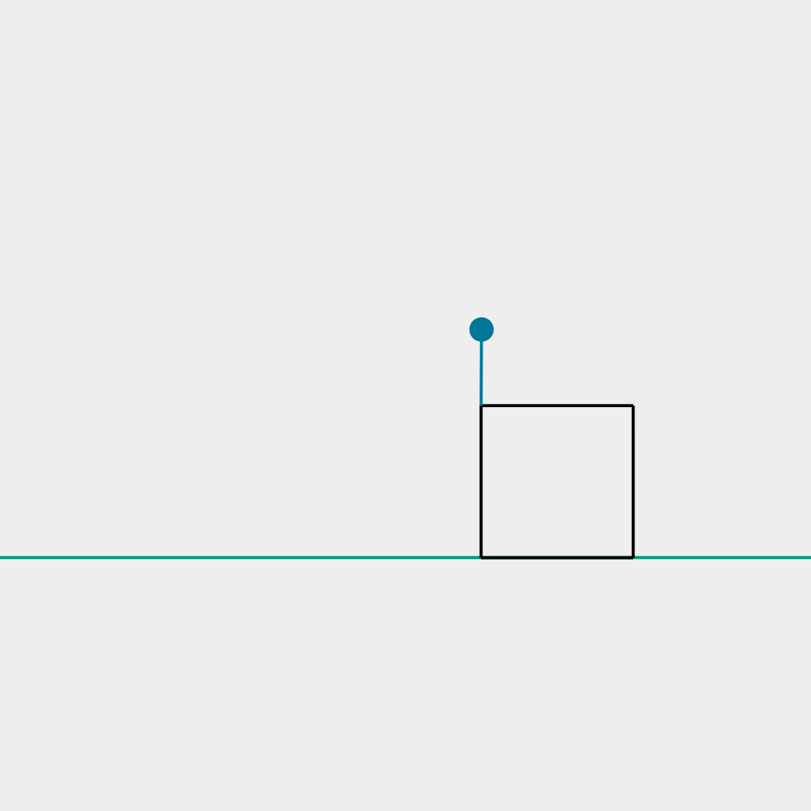 Best-seller: Tesseract on a string! |
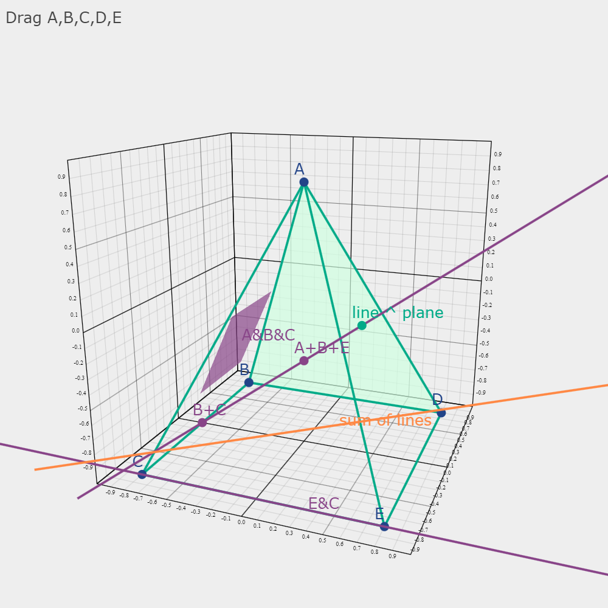 3D projection and intersection |
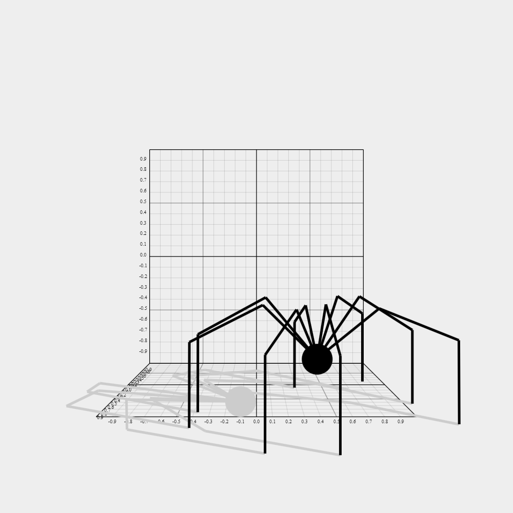 Build-A-Spider Workshop! |
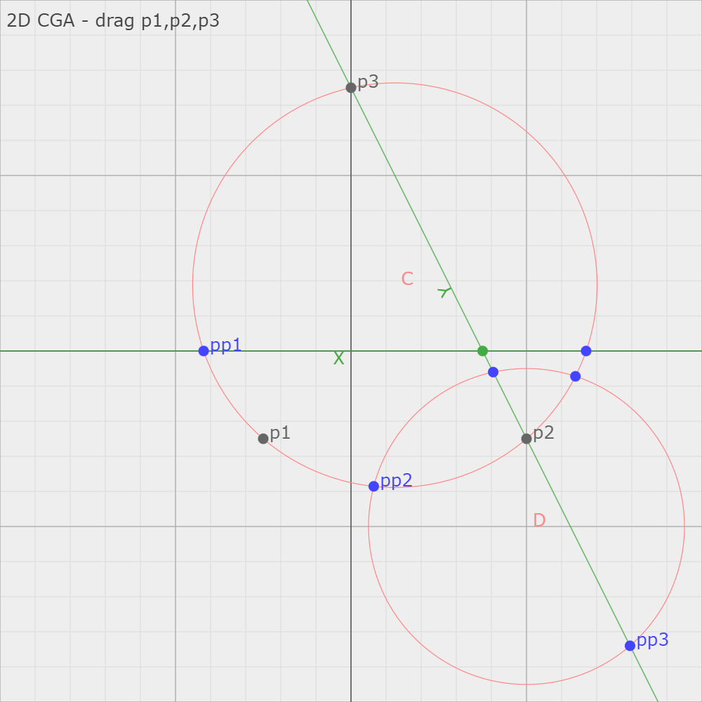 Project and intersect, but round |
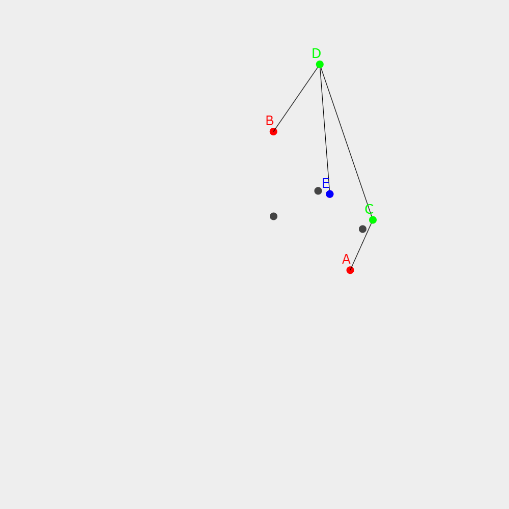 Fivebar mechanism |
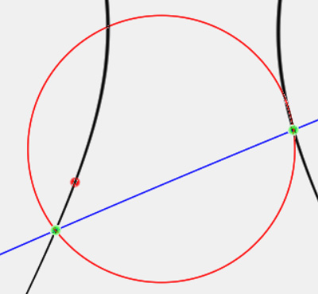 2DCSGA! |
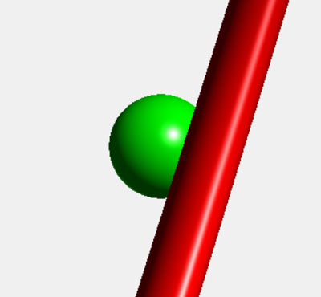 Mother Algebra |
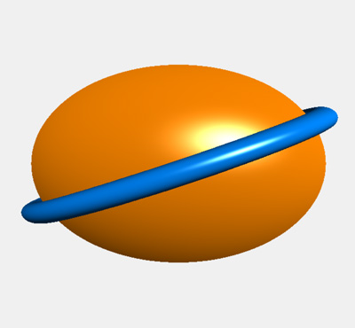 3DCCGA |